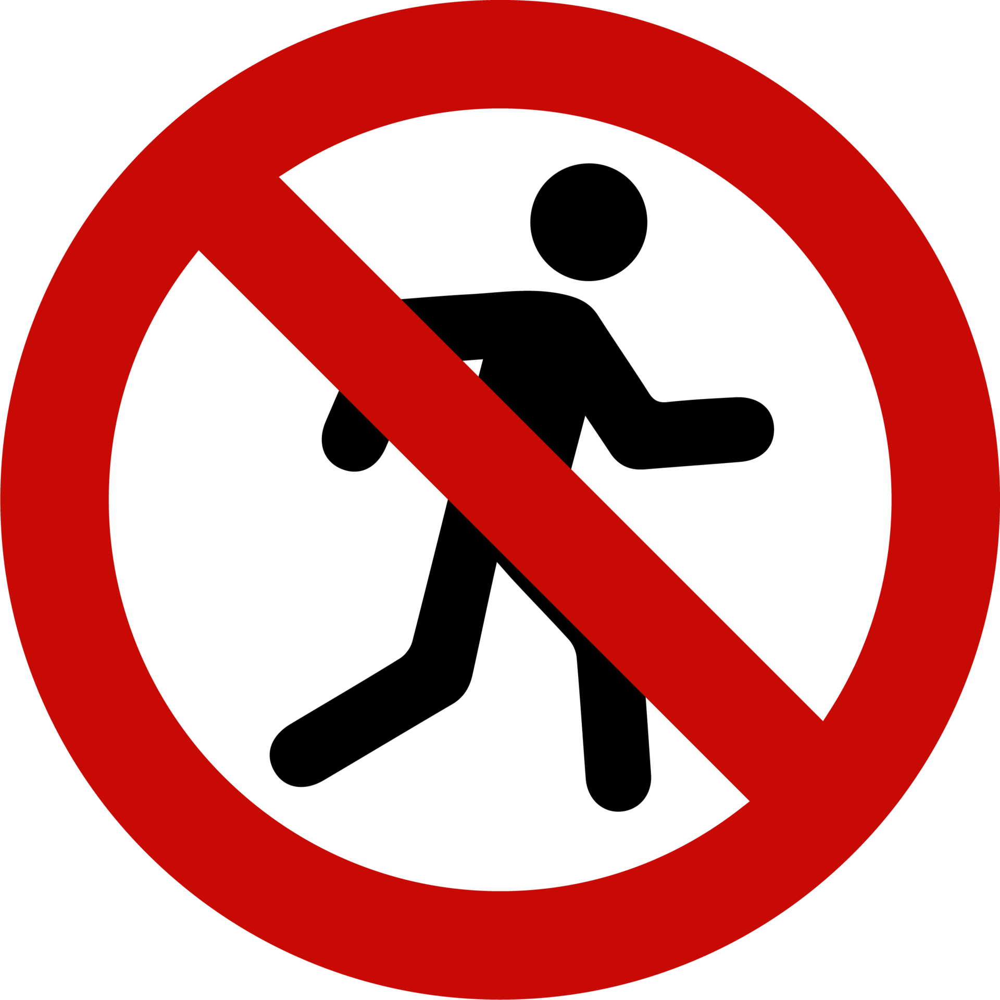
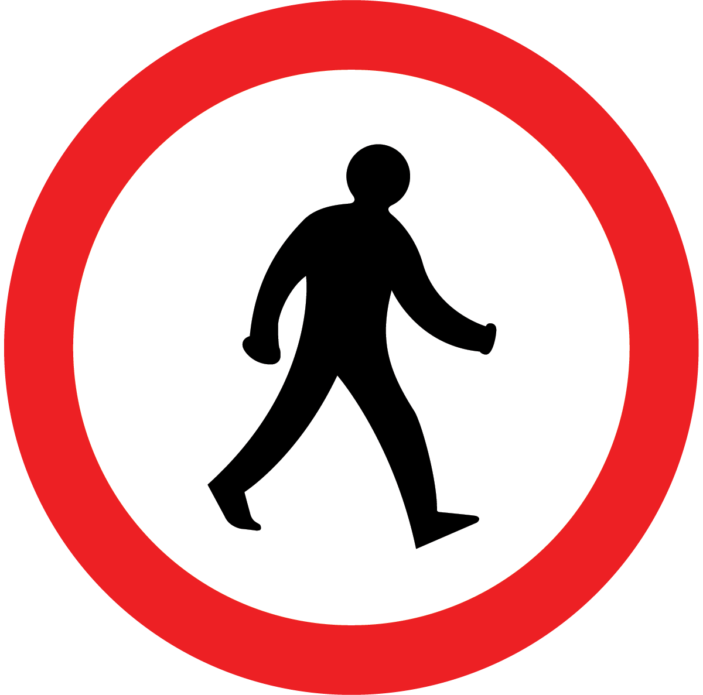
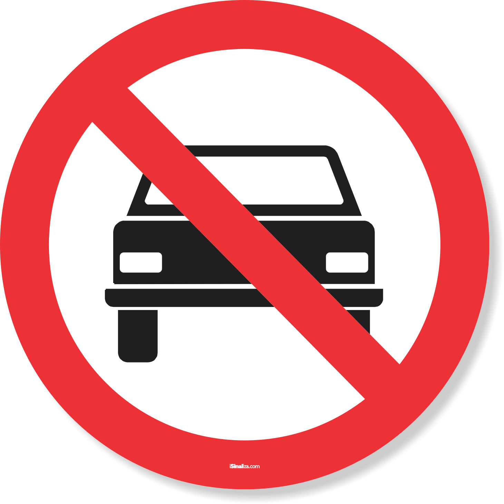
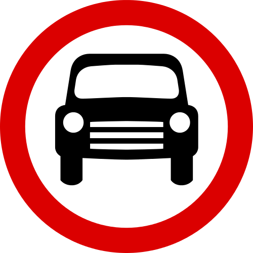

Quando o semáforo estiver verde, os pedestres devem parar para que os veículos realizem a travessia.
Quando o semáforo estiver amarelo, é necessário esperar, pois logo ficará vermelho.

Quando o semáforo estiver vermelho, os pedestres poderão atravessar e os veículos quem devem parar.

Quando o semáforo estiver vermelho, os veículos devem parar e os pedestres quem realizarão a travessia.
Quando o semáforo estiver amarelo, é necessário esperar, pois logo ficará vermelho.

Quando o semáforo estiver verde, os veículos podem atravessar e os pedestres deverão parar.